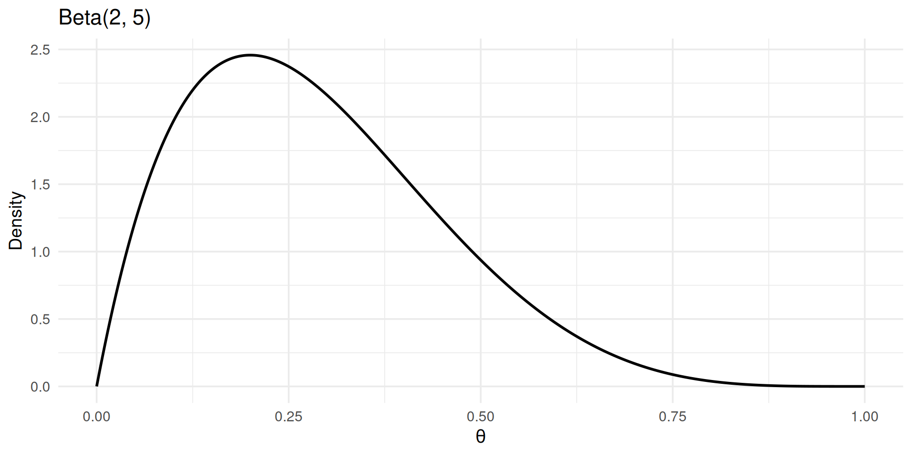
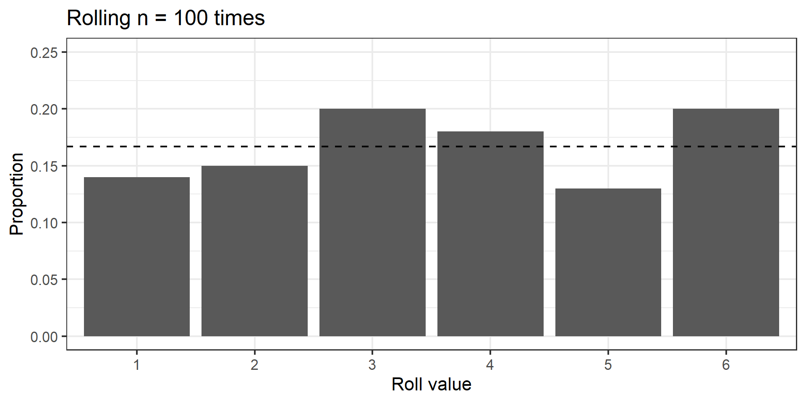
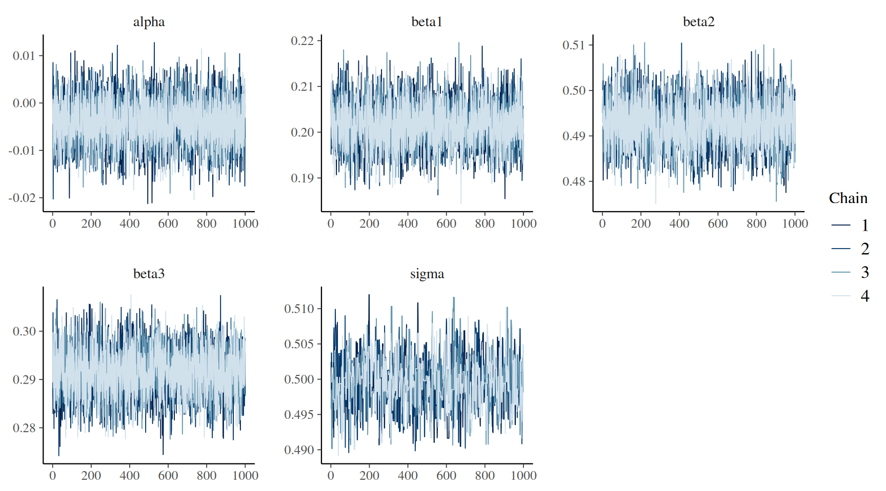
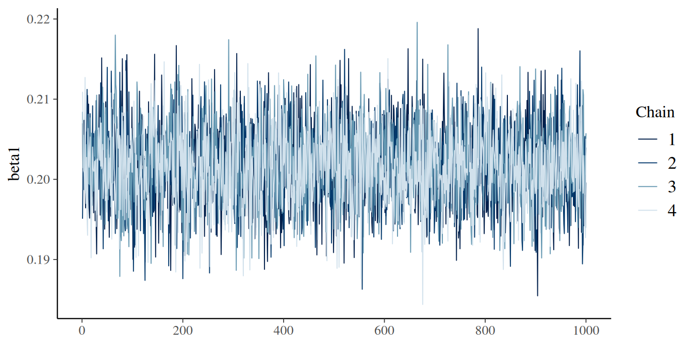
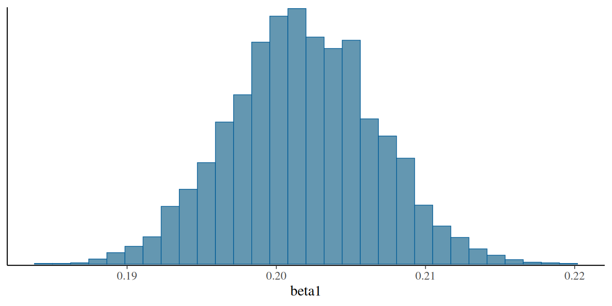

| y | x1 | x2 | x3 |
|---|---|---|---|
| -0.15 | -0.62 | -0.80 | 0.23 |
| 0.02 | 0.19 | -1.06 | 0.23 |
| -1.09 | -0.83 | -1.04 | -0.65 |
| -1.00 | 1.61 | -1.19 | -1.94 |
| -0.14 | 0.34 | -0.50 | 1.03 |
| 0.34 | -0.81 | -0.52 | -0.29 |
Principles of Bayesian statistics
Key ideas and concepts
Aug 5, 2026
Outline
- Overview
- Introduction to Bayesian methods and concepts
- Using
NIMBLEfor Bayesian inference - A first look ahead to
R-INLA
Overview
This course is for those who
- Are interested in or who have heard about Bayesian modeling.
- Work in Environmental Health (or adjacent fields).
- Have little theoretical or practical experience of Bayesian ideas.
- Would like some tools and know-how to get started in an approachable and friendly setting.
- People who would like to have some fun while learning!
- There will be lots of code to get through over the next three days…
R
Ris an interactive environment developed by statisticians for data analysis.- A more detailed Introduction to
Rcan be found at https://www.r-project.org. Ris the environment we will use throughout the workshop.- But this isn’t a course to learn
R… - There will be lots of code, though we will limit the equations to essentials.
R code
- Sample
Rcode:
# Load packages
library(ggplot2)
# Beta(2, 5) density
theta <- seq(0, 1, length.out = 400)
dens <- data.frame(theta = theta, density = dbeta(theta, 2, 5))
# Plot
p <- ggplot(dens, aes(theta, density)) +
geom_line(linewidth = 1) +
labs(x = expression(theta), y = "Density",
title = "Beta(2, 5)") +
theme_minimal(base_size = 14)
plot(p)R code output
- Output of code:

RStudio by Posit
RStudiois an integrated development environment (IDE) forR.RStudioprovides a convenient graphical interface toR, making it more user-friendly, and providing many useful features.- Such features include direct code execution, tools for plotting, history, debugging, and workspace management.
- A more detailed background on
RStudiocan be found at https://posit.co/about/.
RStudio by Posit

Posit (RStudio) Cloud
PositCloudis a cloud-basedRStudiowhich runs projects and code in the cloud.PositCloudallows convenient scaling and sharing of code, including for training programs such as SHARP.- Registration for free is available via https://posit.cloud/.
- We will go through how to navigate
RStudioCloudtogether. - More details are available via https://docs.posit.co/cloud/.
GitHub
- Version control to interface with
Posit(RStudio)Cloud. - This is just for information, as you will not be expected to be an expert on
GitHubto participate in thisSHARPcourse. - However, you should learn it in general as it’s really useful in today’s modern research environment.

NIMBLE
NIMBLEis one of several Bayesian inference packages.NIMBLEcode is written in a slightly unusual format if you’re used to just using baseR.- Written in the style of a program called
BUGS, developed at Imperial College London. - But you don’t really need to know about
BUGSto be able to useNIMBLE.
NIMBLE
- In the lab after this, we will start with some straightforward examples for situations you’re likely familiar with to introduce the style of writing models.
- These examples will feature basic regression models using linear predictors.
R with NIMBLE (from lab immediately after this)
- Example basic linear multi-predictor regression:
\[ \begin{split} y_i &\sim \text{Normal}(\mu_i, \sigma) \quad i = 1,..., N \\ \mu_i &= \alpha + \beta_1 x_1 + \beta_2 x_2 + \beta_3 x_3 \end{split} \]
R with NIMBLE (from lab immediately after this)
- As written in frequentist form:
R with NIMBLE (from lab immediately after this)
- Sample
NIMBLEcode:
code <- nimbleCode({
# priors for parameters
alpha ~ dnorm(0, sd = 100) # prior for alpha
beta1 ~ dnorm(0, sd = 100) # prior for beta1
beta2 ~ dnorm(0, sd = 100) # prior for beta2
beta3 ~ dnorm(0, sd = 100) # prior for beta3
sigma ~ dunif(0, 100) # prior for variance components
# regression formula
for (i in 1:n) { # n is the number of observations we have in the data
mu[i] <- alpha + beta1 * x1[i] + beta2 * x2[i] + beta3 * x3[i] # manual entry of linear predictors
y[i] ~ dnorm(mu[i], sd = sigma)
}
})R with NIMBLE (from lab immediately after this)
- Comparing frequentist code…:
- …with Bayesian (
NIMBLE) code:
code <- nimbleCode({
# priors for parameters
alpha ~ dnorm(0, sd = 100) # prior for alpha
beta1 ~ dnorm(0, sd = 100) # prior for beta1
beta2 ~ dnorm(0, sd = 100) # prior for beta2
beta3 ~ dnorm(0, sd = 100) # prior for beta3
sigma ~ dunif(0, 100) # prior for variance components
# regression formula
for (i in 1:n) { # n is the number of observations we have in the data
mu[i] <- alpha + beta1 * x1[i] + beta2 * x2[i] + beta3 * x3[i] # manual entry of linear predictors
y[i] ~ dnorm(mu[i], sd = sigma)
}
})INLA and R-INLA
- A preview of where we are heading later in the workshop:
- Integrated Nested Laplace Approximation (Rue, Martino & Chopin, 2009).
- We usually only want posterior marginals, not the joint posterior.
- A huge share of the models we actually fit belong to one restricted class — latent Gaussian models.
- Within that class, marginals can be approximated deterministically, accurately, and very fast.
- Don’t worry about the details yet: we will encounter this properly from the end of tomorrow.
R-INLA
- Sample
R-INLAcode (~equivalent of earlierNIMBLEcode).
# Fixed effect prior
prior_fixed <- list(
mean.intercept = 0,
prec.intercept = 1e-4,
mean = 0,
prec = 1e-4
)
# PC prior for sigma
prior_sigma <- list(
prec = list(prior = "pc.prec", param = c(100, 0.01))
)
formula <- y ~ x1 + x2 + x3
fit <- inla(
formula,
family = "gaussian",
data = data,
control.fixed = prior_fixed,
control.family = list(hyper = prior_sigma),
control.compute = list(dic = TRUE, waic = TRUE)
)MCMC and INLA
MCMC |
INLA |
|
|---|---|---|
| Approach | Stochastic sampling | Deterministic approximation |
| Model class | Almost anything | Latent Gaussian models only |
| Error | Monte Carlo error, \(\to 0\) with time | Approximation error, fixed |
| Runtime | Good! But can be a challenge to scale | Often much faster for large models |
| Reproducible | Up to the seed | Exactly |
| Diagnostics needed | Many | Few |
Introduction to Bayesian methods and concepts
Classical probability
- “Frequentist”.
- Limit of long-run relative frequency.
- Ratio of the number of times event occurred to the number of trials.
Classical probability

- Consider rolling a fair six-sided die many times.
- We are seeing how often we roll a \(2\).
- We roll die a large number of times (\(N\)).
- Probability that we roll a \(2\):
- \[Pr(X=2) = N(X=2)/N\]
- This will tend to \(1/6=0.16666666...\) as \(N \rightarrow \infty\)
Classical probability
library(ggplot2)
set.seed(100)
rolls <- sample(1:6, 1e6, replace = TRUE)
for (n in c(1e2, 1e3, 1e4, 1e5, 1e6)) {
d <- data.frame(x = factor(1:6), p = tabulate(rolls[1:n], nbins = 6) / n)
print(
ggplot(d, aes(x, p)) +
geom_col() +
geom_hline(yintercept = 1 / 6, linetype = 2) +
coord_cartesian(ylim = c(0, 0.25)) +
xlab("Roll value") + ylab("Proportion") +
ggtitle(paste0("Rolling n = ", format(n, big.mark = ",", scientific = FALSE), " times")) +
theme_bw(base_size = 16)
)
}Classical probability

Subjective probability
- What is it?
- Probability as degree of belief, not long-run frequency.
- Quantifies uncertainty based on prior knowledge, expert opinion, or experience.
- Key Features
- Personal: Two people can assign different probabilities to the same event — both valid.
- Coherent: Must follow the rules of probability (e.g., total = 1).
- Updatable: Modified via Bayes’ Theorem when new data arrives.
- Example
- A researcher believes there’s a 70% chance a new intervention reduces mortality, based on past studies and domain knowledge — even before seeing the data.
Thomas Bayes and Simon Pierre Laplace
- Started with these two.
- Bayes (1701-1761) is why it’s called Bayesian.
- Sorry Laplace (1749-1825)!


Bayes theorem, prior, likelihood, and posterior
\[P(\theta|y) \propto P(y|\theta) P(\theta)\]
\(P(\theta)\) is the
prior(known or estimated a priori).\(P(y|\theta)\) is the
likelihood(probability of data given parameters of interest).\(P(\theta|y)\) is the
posterior(parameters of interest given data).
Bayesian inference
- Leaving behind
frequentistinference here. Bayesianwhen the prior is unknown and a distribution is specified for it.- Bayes theorem exists in frequentist world, but here prior is a distribution.
- Prior + Data -> Posterior.
- Posterior can be thought of as
compromisebetween prior evidence and current data.
Bayesian inference

Priors (very briefly)
- Priors represent subjective influence.
- Priors also represent previous evidence.
- Prior choice can be vital.
- We will explore choosing priors in more detail at the end of today (Day 1).
Conjugacy (very briefly)
- When the posterior is an analytical solution of the prior and likelihood.
- Examples include:
- Normal data and Normal prior.
- Binomial data and Beta prior.
- Poisson data and Gamma prior.
Normal-normal conjugacy example
Let:
Observations: \(y_1, \dots, y_n \sim N(\theta, \sigma^2)\), with known \(\sigma^2\)
Prior: \(\theta \sim N(\mu_0, \sigma_0^2)\)
Then the posterior is:
\[ \theta \mid y \sim N(\mu_n, \sigma_n^2) \]
- where:
\[ \sigma_n^2 = \left( \frac{n}{\sigma^2} + \frac{1}{\sigma_0^2} \right)^{-1} \]
\[ \mu_n = \sigma_n^2 \left( \frac{n\bar{y}}{\sigma^2} + \frac{\mu_0}{\sigma_0^2} \right) \]
Non-conjugacy (most of the time in real world)
- Because most prior-likelihood-posterior relationships are non-conjugate.
- No closed-form posterior (unlike normal-normal example).
- Need to approximate posterior from sampling methods.
- Need non-analytical solution to infer distributions.
- This is where ‘brute force’ sampling of distributions takes place.
Obtaining brute force posterior distribution
- Many different types of Markov Chain Monte Carlo (MCMC):
- Metropolis-Hastings:
- Proposes moves; accepts with probability based on posterior ratio.
- General-purpose, but can mix slowly in high dimensions.
- Gibbs Sampling:
- Samples each parameter conditionally.
- Requires full conditional distributions.
- Efficient when conditionals are tractable.
- Samples each parameter conditionally.
- Hamiltonian Monte Carlo (HMC):
- Uses gradient information to propose informed moves.
- Efficient in high dimensions, fewer correlated samples.
- Implemented in Stan, PyMC, etc.
- Uses gradient information to propose informed moves.
- Metropolis-Hastings:
Obtaining brute force posterior distribution
- Many different types of Markov Chain Monte Carlo (MCMC):
- No-U-Turn Sampler (NUTS):
- An extension of HMC that automatically tunes parameters.
- Avoids manual tuning of step size and trajectory length.
- Used in Stan and PyMC
- No-U-Turn Sampler (NUTS):
- Also non-MCMC:
- Variational Inference (VI):
- Optimizes a simpler distribution to approximate the posterior.
- Much faster than MCMC, but gives an approximation, not exact samples.
- Useful in large-scale models (e.g., deep learning).
- Optimizes a simpler distribution to approximate the posterior.
- Laplace Approximation (LA):
- More on that later…
- Variational Inference (VI):
Sampling posterior
- Example basic linear multi-predictor regression:
\[ \begin{split} y_i &\sim \text{Normal}(\mu_i, \sigma) \quad i = 1,..., N \\ \mu_i &= \alpha + \beta_1 x_1 + \beta_2 x_2 + \beta_3 x_3 \\ \alpha &= 0 \\ \beta_1 &= 0.2 \\ \beta_2 &= 0.5 \\ \beta_3 &= 0.3 \\ \sigma &= 0.5\\ \end{split} \]
Idealized ‘hairy caterpillar’

Informative or non-informative priors?
- A source of intrigue from pre-Bayesians is how priors are chosen.
- Priors can be informed by existing knowledge.
- But what if we don’t know anything really prior to inference?
- Most of the time we will not have analytical solutions.
How to estimate non-conjugate posterior?
- Some kind of software to help us implement models for inference.
- Using
R. - Packages (
BUGS,NIMBLE,STAN,R-INLAetc.). - We will be focusing on using
NIMBLEandR-INLAthroughout the three days.
Using NIMBLE for Bayesian inference
Why we’re using NIMBLE for the start of the workshop
- Interpretability.
- Flexibility.
Illustrative example of basic regression in NIMBLE
- Let’s go through an example from the upcoming lab.
Linear regression
- Example basic linear multi-predictor regression:
\[ \begin{split} y_i &\sim \text{Normal}(\mu_i, \sigma) \quad i = 1,..., N \\ \mu_i &= \alpha + \beta_1 x_1 + \beta_2 x_2 + \beta_3 x_3 \\ \alpha &= 0 \\ \beta_1 &= 0.2 \\ \beta_2 &= 0.5 \\ \beta_3 &= 0.3 \\ \sigma &= 0.5\\ \end{split} \]
Linear regression
- First create some example data for our model:
set.seed(1)
p <- 3 # number of explanatory variables
n <- 10000 # number of observations
X <- matrix(round(rnorm(p * n), 2), nrow = n, ncol = p) # explanatory variables
true_betas <- c(0.2, 0.5, 0.3) # coefficients for beta1, beta2, beta3
sigma <- 0.5 # standard deviation of variability around perfect agreement
y <- rnorm(n, X %*% true_betas, sigma)
# centre the explanatory variables (shifts the intercept, leaves slopes alone)
x1 <- X[, 1] - mean(X[, 1])
x2 <- X[, 2] - mean(X[, 2])
x3 <- X[, 3] - mean(X[, 3])Linear regression
- What does the dataset look like?
Linear regression
- What does equivalent frequentist model output look like for reference?
Linear regression
- What does equivalent frequentist model output look like for reference?
| Estimate | 2.5% | 97.5% | |
|---|---|---|---|
| (Intercept) | -0.004 | -0.014 | 0.006 |
| x1 | 0.202 | 0.192 | 0.212 |
| x2 | 0.493 | 0.483 | 0.503 |
| x3 | 0.292 | 0.282 | 0.301 |
Linear regression
NIMBLEadopts and extendsBUGSas a modeling language and lets you program with the models you create.- Looks like below (as seen earlier in lecture and later in lab).
library(nimble)
code <- nimbleCode({
# priors for parameters
alpha ~ dnorm(0, sd = 100) # prior for alpha
beta1 ~ dnorm(0, sd = 100) # prior for beta1
beta2 ~ dnorm(0, sd = 100) # prior for beta2
beta3 ~ dnorm(0, sd = 100) # prior for beta3
sigma ~ dunif(0, 100) # prior for variance components
# regression formula
for (i in 1:n) { # n is the number of observations we have in the data
mu[i] <- alpha + beta1 * x1[i] + beta2 * x2[i] + beta3 * x3[i] # manual entry of linear predictors
y[i] ~ dnorm(mu[i], sd = sigma)
}
})Linear regression
- Setting up data (will explain more in lab)
constants <- list(n = n)
data <- list(y = y, x1 = x1, x2 = x2, x3 = x3)
# one set of starting values per chain, deliberately spread out
inits <- list(
list(alpha = -1, beta1 = -1, beta2 = -1, beta3 = -1, sigma = 0.5),
list(alpha = 0, beta1 = 0, beta2 = 0, beta3 = 0, sigma = 1),
list(alpha = 1, beta1 = 1, beta2 = 1, beta3 = 1, sigma = 2),
list(alpha = 2, beta1 = -2, beta2 = 2, beta3 = -2, sigma = 3)
)Linear regression
- Run the MCMC simulations. There are lots of arguments in the main function, nimbleMCMC().
tic <- Sys.time()
nimbleMCMC_samples_initial <- nimbleMCMC(
code = code,
data = data,
constants = constants,
inits = inits,
niter = 2000, # run 2000 samples per chain
nburnin = 1000, # discard the first 1000 as warm-up
nchains = 4, # four chains, each from different starting values
setSeed = 1,
samplesAsCodaMCMC = TRUE,
progressBar = FALSE
)
toc <- Sys.time()
toc - ticLinear regression
- Run the MCMC simulations. There are lots of arguments in the main function, nimbleMCMC().
| Runtime |
|---|
| 131.0 seconds |
Linear regression
- The following operations will help us to answer: What is the summary of each estimated parameter from the samples?
Linear regression
- The following operations will help us to answer: What is the summary of each estimated parameter from the samples?
| variable | mean | median | sd | mad | q5 | q95 |
|---|---|---|---|---|---|---|
| alpha | -0.004 | -0.004 | 0.005 | 0.005 | -0.012 | 0.004 |
| beta1 | 0.202 | 0.202 | 0.005 | 0.005 | 0.194 | 0.210 |
| beta2 | 0.493 | 0.493 | 0.005 | 0.005 | 0.484 | 0.501 |
| beta3 | 0.292 | 0.291 | 0.005 | 0.005 | 0.283 | 0.300 |
| sigma | 0.499 | 0.499 | 0.004 | 0.003 | 0.494 | 0.505 |
Linear regression
- Then examine how well the model has converged, which typically is identified by how close each rhat value is to 1.00.
- rhat compares variation within each chain to variation between the four chains.
Linear regression
| variable | rhat | ess_bulk | ess_tail |
|---|---|---|---|
| alpha | 1.001 | 4090.674 | 4088.974 |
| beta1 | 0.999 | 3663.781 | 3990.647 |
| beta2 | 1.000 | 4125.737 | 3686.433 |
| beta3 | 1.000 | 4104.405 | 3979.314 |
| sigma | 1.005 | 878.279 | 963.391 |
Linear regression
- What do the samples of the target parameters actually look like?
- One colour per chain: we want them overlapping, not drifting apart.
Linear regression
- What do the samples of the target parameters actually look like?
- One colour per chain: we want them overlapping, not drifting apart.

Linear regression
Let’s now focus on beta1 (which we know is 0.2 from setting up initially).
Linear regression
Let’s now focus on beta1 (which we know is 0.2 from setting up initially).

Linear regression
Plotting beta1 samples (posterior) as a histogram, pooled across all four chains…
Linear regression
Plotting beta1 samples (posterior) as a histogram, pooled across all four chains…

Getting ready for the lab
The lab for this session
This lab will involve taking some models and concepts from the Introduction to Bayesian Methods lecture and introduce you to the way
NIMBLEworks.During this lab session, we will:
- Explore how
NIMBLEis written and works; - Write some common regression models (Normal, logistic regression, Poisson);
- Understand how basic model assessment is made; and
- Test out how adjustments of models are made via different priors and more samples.
Questions?